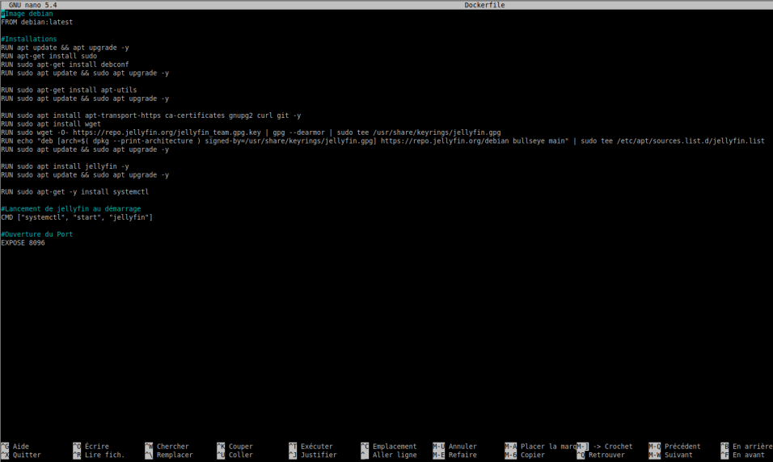
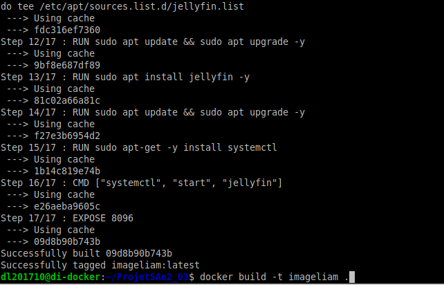
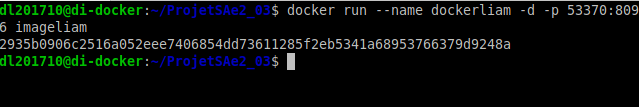

SAE 2.03 du groupe 8
Présentation de l'équipe
| membres | fonctions | rôles |
| Sorel Martin | bibliothéquaire | coordinateur, perfectionneur |
| Deniau Liam | développeur | concepteur, expert |
| Gouley Logann | soutien | soutien, correcteur d'orthographe |
| Champvillard Sébastien | soutien | expert, soutien |
Présentation du sujet
But du projet
Proposer l’installation d’un service réseau à l’aide de Docker.
Contraintes du projet
- Utilisation de Docker - Projet basé sur des dockerfile - Projet hébergé dans un dépôt GitHub - On devait partir d'une image debia - Le projet doit fournir un seul service - Arborescence imposée
Installation d'un service de partage de fichiers
1) Créer une image avec un dockerfile
La premiere étape fut de créer une image dockerfile, pour ce faire nous avons créé dans le Docker un fichier nommé "Dockerfile", c'est ce dernier qui contient toutes les commandes d'installations de l'image Docker. Une fois ce fichier créé et les commandes (detaillées ci-dessous) écrites, il suffit de lancer la commande suivante : "docker build -t nomDeVotreImage". Votre image est à présent créée, bravo à vous.
2) Installer l'application
L'image ci-dessous montre le contenu de ce fameux fichier Dockerfile. Tout d'abord, nous installons la commande "sudo" pour les droit d'administrateur, suivie des commandes "debconf" et "apt-util" qui seront nécessaires plus tard. Nous devons ensuite installer le package "apt-transport-https". Après cela, nous installons la commande "wget". Ensuite, nous importons grâce à cette dernière la clef GPG pour vérifier l'authenticité du package. Ensuite, nous importons Jellyfin : l'application qui permettra notre partage de fichiers. Pour finir, nous installons "systemctl" pour pouvoir lancer Jellyfin au démarrage du docker, et finalement nous ouvront le port 8096.  
3) lancer l'application
A présent, il suffit de lancer la commande suivante : "docker build -t NomDeVotreImage". Ouvrez un navigateur web et tappez "di-docker:53370" dans la barre d'URL, normalement l'application s'est lancée sur votre page web !
Difficultés rencontrées
- Problèmes de compatibilité : Nous avons eu plusieurs problèmes de compatibilité lors de tentatives d'installation d'applications qui, à première vue, étaient compatibles, mais dont les différentes étapes nécessitaient des packages non compatibles avec le système d'exploitation de l'image Docker. - Problème de compréhension des consignes : Un problème mineur lors de la lecture des consignes a affecté légèrement notre format de rendu. - Problèmes d'installation : Une fois une application complètement compatible trouvée, nous avons eu des problèmes mineurs dans le script de configuration de l'image Docker tels que l'ordre d'installation des packages. En définitif, rien de bien grave.
Conclusion
Cette SAÉ nous a permis d'aborder l’environnement Docker et comprendre son usage dans d'autres situations. Nous avons aussi approfondi notre utilisation de GitHub de façon modérée. Notre équipe de 4 s'est organisée de façon simpliste mais efficace.